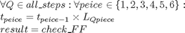

check_path_for_col
Description: ou can pass in a heap of steps or one step and it will test the denso object elipsoids to see if their is a collision, if there is a safe path it returns 1 else it will return 0
Contents
Function Call
- Inputs: all_steps (6*m double) these are the joint configs, points (3*m double) all points we are trying to avoid
- Returns: result (bin) =1 if ok, =0 if NOT ok
function result = check_path_for_col(all_steps,points)
Variables
global r densoobj if nargin<2 global workspace points=workspace.indexedobsticles(GetImpLevInfo(workspace.indexedobsticles),:); % Suggested way to include unknown points since unknowncoords-knowncoords inludes obstacles % points=setdiff(workspace.unknowncoords(GetImpLevInfo(workspace.unknowncoords),:),... % workspace.knowncoords(GetImpLevInfo(workspace.knowncoo % rds),:),'rows'); end %robot parameters n = r.n; L = r.link; t = r.base; % Initially set result result=1;
Check the soft motion limits of the arm
if ~joint_softlimit_check(all_steps) return; end
Go through each step and check for collsions

for i=1:size(all_steps,1) t = r.base; for piece=1:n t = t * L{piece}(all_steps(i,piece)); tempresult=check_FF(t,densoobj(piece+1).ellipse,points); if tempresult~=1 result=0; return %from function since there is a collision end end end